00
はじめに
ホームページを公開するには、お店と同じように「住所」と「土地」が必要です。
この住所でホームページが開きます。
使う会社は2つです
| スタードメイン | 住所（ドメイン）を買う日本の会社です。費用はドメインの種類によって違います。金額はクラレオからLINEでお伝えします。毎年、更新の費用がかかります。 |
|---|---|
| Cloudflare （クラウドフレア） | 土地（サーバー）を無料で借りる会社です。0円のまま使います。画面は日本語にできます。 |
持ち主はお店さまなので、お店さまの名前で登録していただきます。こうしておけば、将来もずっとお店さまが自由に使えます。
全体の流れ
- 1スタードメインでドメインを取るお店さま約15分
- 2Cloudflareに登録するお店さま約10分・無料（ログインの安全設定も）
- 3クラレオを招待するお店さま約5分
- 4つなぐ設定をするクラレオ終わったらLINEでご連絡します
- 5最後の設定を1か所だけお店さまLINEでお送りする文字を貼り付けるだけ
用意するもの
- パソコン（スマホでもできますが、パソコンがおすすめです）
- ふだん見ているメールアドレス
- クレジットカード（コンビニ払い・銀行振込も選べます）
- スマホ（ログインの安全設定で「Google Authenticator」という無料のアプリを使います）
- 紙とペン（パスワードを書いておくため）
- LINEでお伝えしたドメイン名
01
スタードメインでドメインを取る
写真の赤い枠を押してください。写真のドメイン名と金額は例です。写真はタップすると大きく見られます。
-
スタードメインを開いて、ドメイン名を検索します。
https://www.star-domain.jp/ を開き、「まずは欲しいドメイン名を検索！」に「.jp」などの前の部分だけを入れて「検索」を押します。
-
右側の「ドメインのみ申込」の「選択する」を押します。
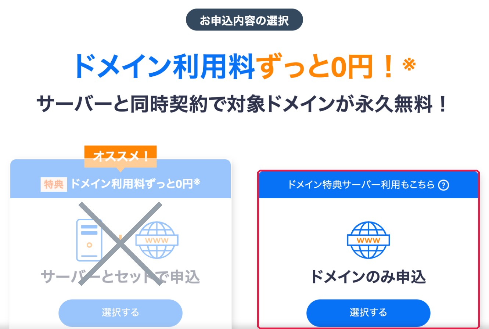
左の「サーバーとセットで申込（オススメ！）」は選ばないでください有料のサーバー契約になります。サーバーはCloudflareの無料のものを使います。 -
LINEでお伝えした種類（「.jp」など）にチェックを入れて、「取得手続きに進む」を押します。
上のボタンがオレンジ色の「選択中」になっていればOKです。
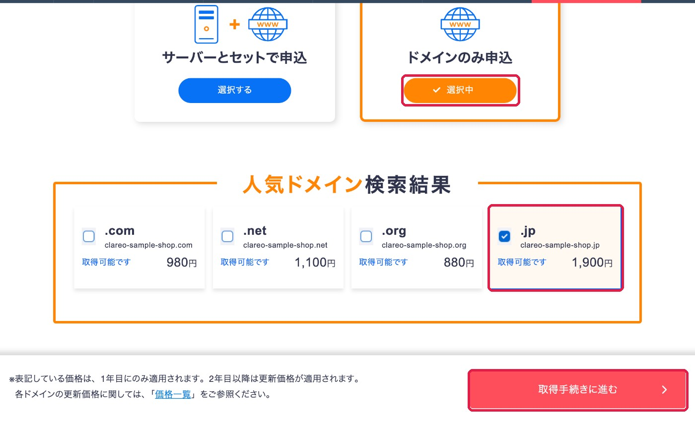
「取得できません」と出たときほかの人が使っている住所です。LINEでご連絡ください。 -
契約期間は「1年」のまま、「取得手続きに進む」を押します。
金額が、LINEでお伝えしたものと同じか確かめてください。
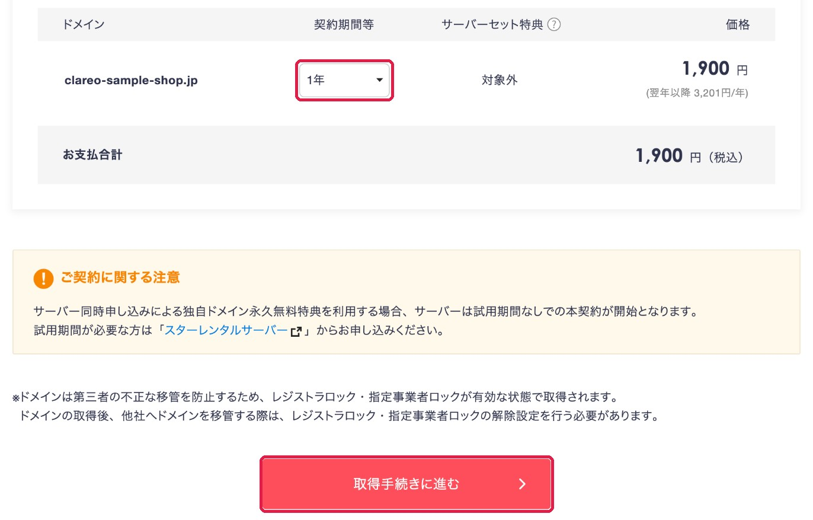
-
左側の「Star8アカウントの登録へ」を押します。
Star8（スターエイト）は、スタードメインの会員登録の名前です。
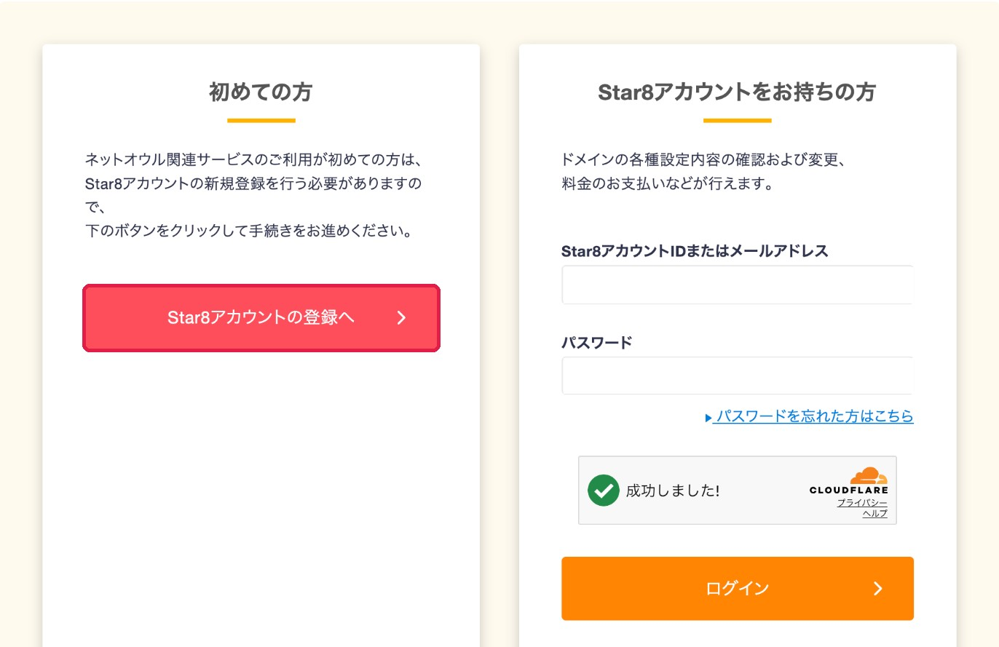
-
メールアドレス・パスワードを入れて、契約者種別を選びます。
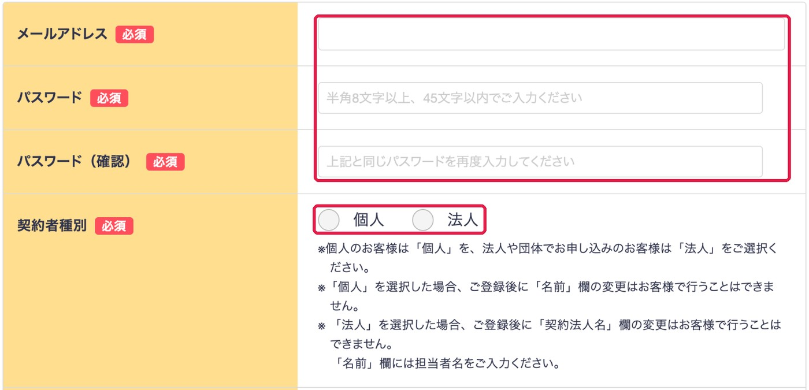
何を入れればいい？
メールアドレス ふだん見ているもの パスワード 半角の英数字で8文字以上。紙に書いておく 契約者種別 個人事業は「個人」、会社は「法人」。あとから変えられません 契約法人名など 「法人」の方だけ入れます -
お名前と郵便番号を入れて、「郵便番号から住所入力」を押します。
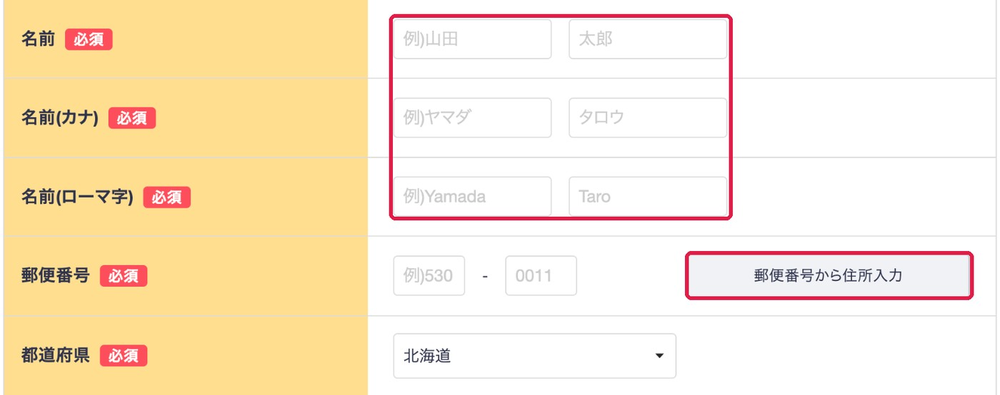
ローマ字の名前の書き方
例：山田 太郎 → Yamada Taro
-
住所と、ローマ字の住所を入れます。
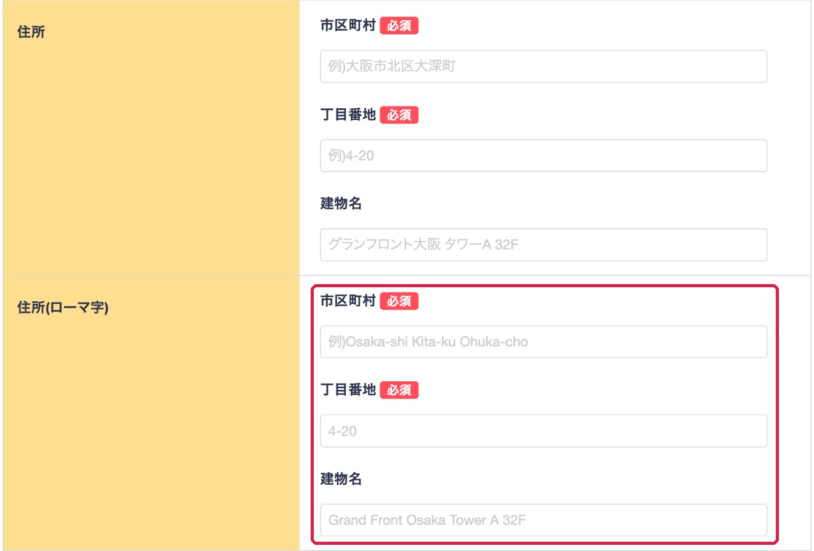
ローマ字の住所の書き方
市区町村 例：甲府市丸の内 → Kofu-shi Marunouchi
「〇〇市」は「-shi」、「〇〇町」は「-cho」丁目番地 数字はそのまま。例：1-2-3 建物名 なければ空けたままでOK わからないときは、LINEで住所を送っていただければローマ字にしてお返しします。
-
電話番号を入れて、2か所を確かめて「確認画面へ進む」を押します。
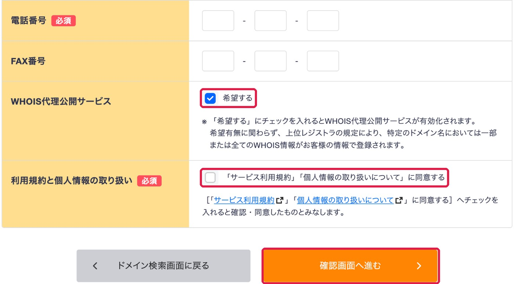
チェックの意味
WHOIS代理公開 チェックしたまま。お店さまの住所や電話番号が、ネット上に公開されにくくなる無料のサービスです 利用規約 チェックを入れます FAX番号 なければ空けたままでOK -
お支払い方法を選び、「同意する」にチェックして「申し込む」を押します。
クレジットカードがおすすめです。「サーバー」や「オプション」をすすめられても、何も選ばずに進めてください。完了すると、スタードメインからメールが届きます。
手順1はおしまいです取ったドメイン名を紙に書いておいてください。
02
Cloudflareに登録する
無料の「土地」を借りるための登録です。お支払い情報の入力はありません。
-
登録ページを開いて、右上で「日本語」を選びます。
https://dash.cloudflare.com/sign-up
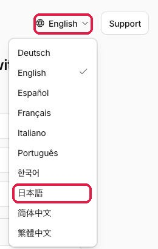
-
メールとパスワードを入れて、「サインアップ」を押します。
「私はロボットではありません」が出たら、チェックを入れてください。パスワードは紙に書いておいてください。
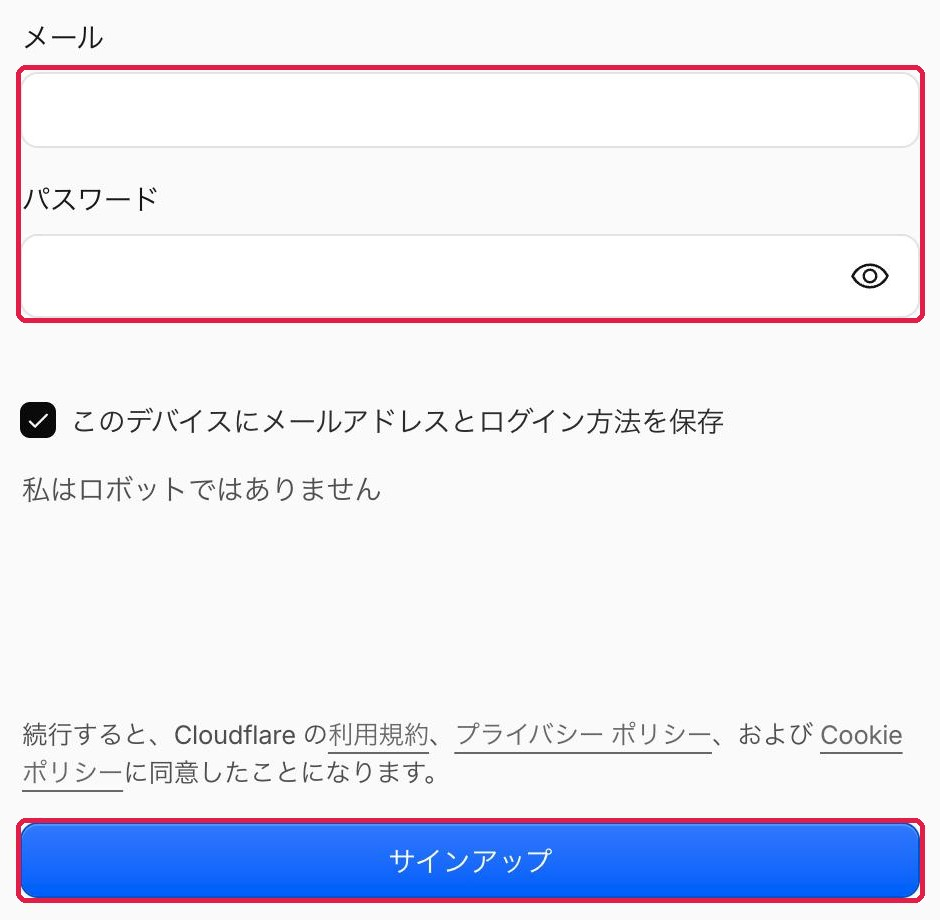
-
届いた確認メールのボタンを押します。
英語のメールです。見つからないときは「迷惑メール」のフォルダを見てください。
「ドメインを追加」「プランを選ぶ」などが出ても、何も入力・購入しないでください左上のオレンジ色の雲のマークを押すと、ホームに戻れます。
続けて、ログインの安全設定（約5分）
パスワードのほかに、スマホに出る6けたの数字がないとログインできないようにします（2段階認証）。パスワードが知られても、ホームページを書き換えられないようにするためです。クラレオからのお願いはこれだけで、あとからLINEでお願いすることはありません。
-
スマホに「Google Authenticator」を入れます。
App Store／Google Playで「Google Authenticator」と検索します。無料です。
-
Cloudflareの画面で、右上の人のマーク →「プロフィール」を押します。
左のメニューの「アクセス管理」→「認証」を押し、「モバイル アプリの認証」の右の「追加」を押します。
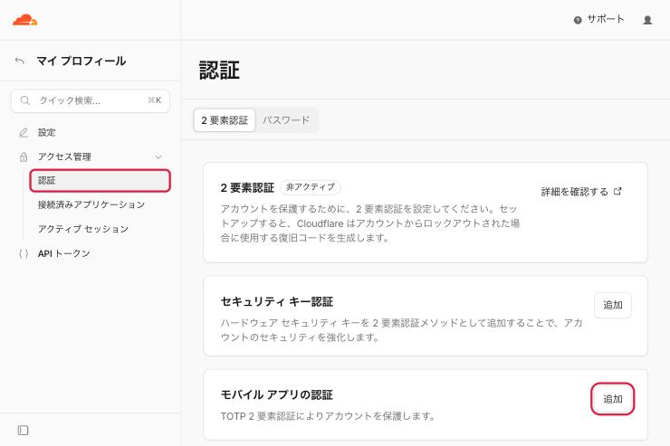
-
画面に出た四角い模様（QRコード）を、スマホのアプリで読み取ります。
アプリの「＋」→「QRコードをスキャン」を押して、パソコンの画面に向けます。アプリに出た6けたの数字を、Cloudflareの画面に入れます。パスワードを聞かれたら、手順2で決めたものを入れます。
-
「バックアップコード」を紙に書くか、印刷して保管します。
バックアップコードは、クラレオにも誰にも送らないでくださいスマホをなくしたときに、これでログインできます。パスワードと同じ紙に書いておくと安心です。これで手順2はおしまいです次のログインから、パスワードのあとに6けたの数字を聞かれます。クラレオは「招待」で作業するので、この数字をお伝えいただく必要はありません。
03
クラレオを招待する
クラレオを「お手伝い役」として招待します。パスワードを教えていただかなくても、クラレオが設定できるようになります。
-
左のメニューの一番下、「アカウントの管理」→「メンバー」を押します。
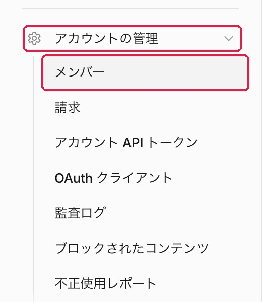
-
右上の「＋メンバーを招待」を押します。
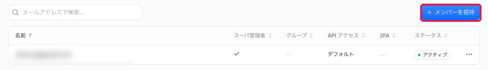
-
メールアドレスの欄に、クラレオのメールアドレスを入れます。
clareo.jp@gmail.com
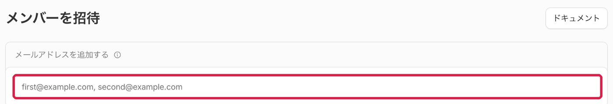
-
一覧の上から3番目「Administrator」の右のスイッチをオンにします。
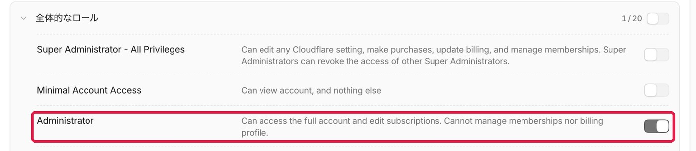
1番目の「Super Administrator」ではありません3番目の、ただの「Administrator」です。 -
一番下までスクロールして、「ポリシーを作成」を押します。
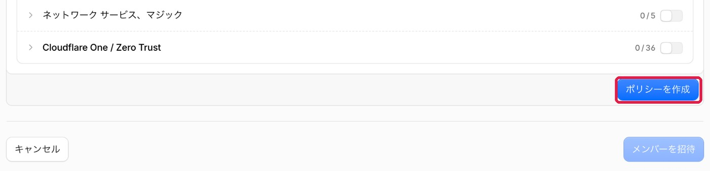
-
「役割：Administrator」と出たら、「メンバーを招待」を押します。
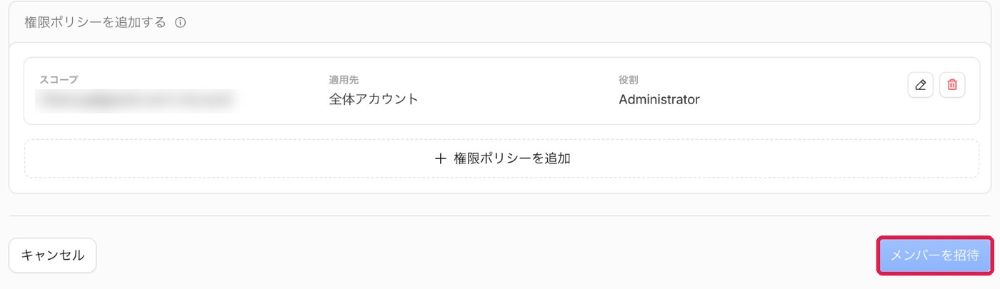
手順3はおしまいですクラレオの公式LINEに「手順1〜3が終わりました。ドメインは〇〇です」とお送りください。
05
最後の設定（LINEが届いてから）
住所と土地を「つなぐ」設定です。クラレオがLINEでお送りする2つの文字（〇〇.ns.cloudflare.com のような形）を貼り付けます。
-
スタードメインにログインします。
https://secure.netowl.jp/starapanel/login/stardomain
手順1のメールアドレスとパスワードを使います。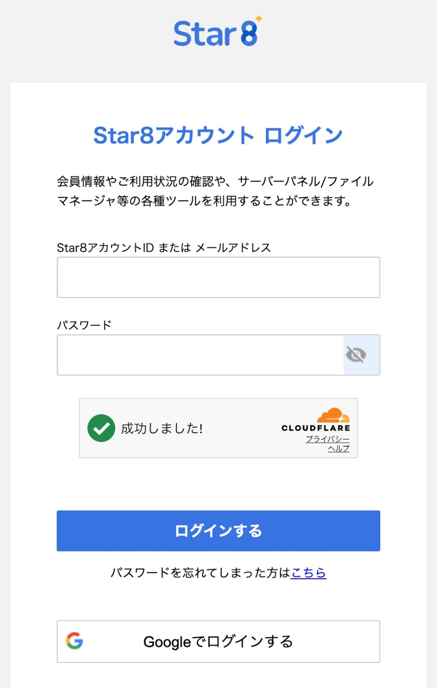
-
「ドメイン」の一覧から取ったドメイン名を押し、「ネームサーバー設定」の「設定変更」を押します。
-
ほかのネームサーバーを使う項目を選び、2つの文字を1行ずつ貼り付けます。
「確認画面へ進む」→「設定を変更する」で完了です。画面の名前が違うときは、画面の写真をLINEで送ってください。
これで準備はすべておしまいですLINEで「変更しました」とお送りください。反映には数時間〜1日かかります。
FAQ
困ったときは
途中で画面を閉じてしまった
「申し込む」を押す前なら、お金はかかっていません。最初からやり直してください。会員登録だけ済んでいる場合は、「Star8アカウントをお持ちの方」からログインして進めます。
「取得できません」と出た
ほかの人が使っている住所です。LINEでご連絡ください。別の候補をお伝えします。
パスワードを忘れた
どちらの会社も、ログイン画面の「パスワードを忘れた方」から作り直せます。
確認のメールが届かない
「迷惑メール」のフォルダを見てください。それでもないときは、LINEでご連絡ください。
「サーバーとセット」で申し込んでしまった
すぐにLINEでご連絡ください。対応をご案内します。
スマホを替えた・なくした
ログインの画面で「バックアップコード」を使ってください。入れたあと、新しいスマホで「ログインの安全設定」をやり直します。わからないときはLINEでご連絡ください（コードは送らないでください）。
来年からの更新は？
ドメインは毎年更新が必要です。時期が近づくとスタードメインからメールが届きます。更新しないとホームページが見られなくなるので、忘れずにお手続きください。